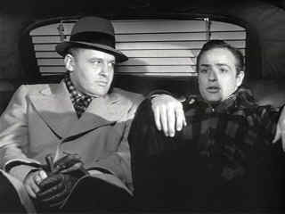

| On
the Waterfront (SE)/A,B |
| Columbia/1954/108/FS 1.33/BW |
Seldom have filmmakers glimpsed into a world with such insight as
On
the Waterfront. The history is in the faces, the cold location setting, the
stark black and white photography. It’s truly a milestone American movie. It digs deep inside the guts of the teamsters working the
docks. Kazan chooses his faces carefully casting with a keen eye. The line-up of dockworkers
includes many extras hired on site. It manages to
forge a racketeering expose, a romance, rare brotherly love and one man’s redemption into a
cohesive living, breathing movie. It's an amazing script from Budd
Schulberg.
 |
| The contender scene. ©Columbia |
On the Waterfront is Terry Malloy's story. The used-up boxer lives by the
good graces of union boss Johnny Friendly who employs Terry's brother, Charlie
the Gent as his financial brain. Terry gets sucked into an act that leaves him
with an acid blood taste in his mouth, a bitter reminder of what his boxing
career might have been. His cut-too-many-times eyes open wide and a benign
innocence is unleashed. Terry falls for Edie Doyle whose brother was recently
murdered. The events surrounding Joey Doyle's death and an ongoing investigation
into corruption on the docks come to crashing collision in spectacularly
dramatic force at the edge of the waterfront.
The performances are nothing less than amazing. Let’s bypass
Brando and Steiger for a moment. Can you imagine the thrill of watching Eva Marie Saint in her
screen debut in that first scene. She tears your guts out. Lee J. Cobb as union boss Johnny
Friendly is a force of violent nature. When he tears into Brando, he means business. This is a guy
sculpted from the granite of the city streets. He’s a survivor. Even at the end, you can’t but
wonder if Johnny Friendly will survive the moment. Karl Malden’s has never been better than as
the self-righteous Father Barry. Catch some of the subtle
doubts you see in his facial movements when he sets certain acts in motion. How about veteran
supporting player James Westerfield as Big Mac? Positively
odious.
The contender
scene in the taxi is one of cinema’s most famous with acting measuring up to the legend. Brando
and Steiger play off each other’s energy with wonderful insight. The tenderness and love
communicated between the desperation and disappointment is almost unparalleled in my memory.
A fascinating featurette dissects the taxi scene from
multiple points of views. Recollections of Rod Steiger are spliced together with
comments from critic Richard Schickel, ctor Martin Landau and actor's
studio host James Lipton. Some of the observations are repetitious and
unenlightening, but the narrow focus is an excellent idea. Strange to hear Steiger remember in the featurette that Brando left for an appointment with a
shrink before Steiger had a chance to do his close-ups and Steiger was left to play to a script
person. It was a bitter memory, but Steiger, feisty as ever, said he probably used the abandonment
to wrench out an even greater performance. Interesting thing about the taxi scene this time out. I
noticed that the cab environment didn’t look natural. The lights of opposite traffic flashing
across the faces of Brando and Steiger are never convincing. The Venetian blinds in the rear window
stand out as wrong. Yet, the scene is so powerful that it blots out any visual imperfections. In
addition to the featurette, the special edition provides screen specific audio
commentary from critic and film historian Richard Schickel and Kazan biographer
Jeff Young. There's also a short interview with Kazan which is very
entertaining.
I wish the elements for classic films like On the Waterfront
were in perfect condition. That's not the case. Happily, On the Waterfront looks very
good. The image never detracts from the mesmerizing experience. There are a few moments when
I wanted to look into the eyes of the actors but the image was too soft. There are some scratches,
a few, in the elements, and some dirt crops up here and there. Image flashing occurs in a few
instances. The transfer is a fine
representation of the film. The power is in tact. Black level is excellent. The misty waterfront of
the early morning is tightly controlled. On the sound side, the music occasionally has feint wow
and flutter. Range is slightly pinched.
|
|
|
|

Selections from the Feature Archive include articles on
Akira Kurosawa, Blonde Bimbos,
Frank
Darabont, Steven Culp,
John
Herzfeld or Vietnam: The
Hollywood Pariah, and many more....
The Bitch Brigade

A line-up of lean-lipped
actresses who marched through Hollywood in a high heeled goose step armed with razor sharp
dialogue. Click on the image to read all about them.
Director Walks the Wire
Balanced by an armor of movie lore and filmmaking daring, director John Herzfeld is comfortable
walking the high wire. Check out this interview by Stu Kobak.

 Have you visited Home Theater
Talk lately? One of the friendliest places on the Net for Home Theater and DVD discussion, you
can get help for installation problems or simply share your opinions with other Vidiots. Have you visited Home Theater
Talk lately? One of the friendliest places on the Net for Home Theater and DVD discussion, you
can get help for installation problems or simply share your opinions with other Vidiots.

Comprehensive DVD review database. Easy to use
interface with specific region searches.

Nearly 40 key software and
hardware companies representing leading consumer electronics giants, major movie studios home video
and music video units have joined forces to establish the DVD Video Group.

DVD
Demystified makes it all clear. The official Internet DVD FAQ for the rec.video.dvd
Usenet newsgroups.

Searchers,
The/ A,B

John Wayne invests Ethan Edwards with enormous dignity and
determination. A classic western from director John Ford. Mesmerizingly beautiful.
|